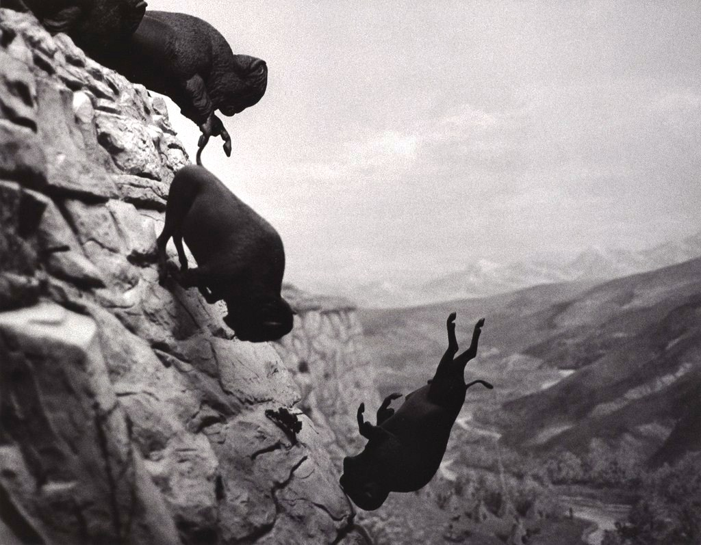

<section id="personal" class="bg-cyclopse hidden-xs">
    <div class="container">
        <div class="row">
            <div class="col-lg-7 col-md-7 col-sm-12">
                <div class="row section-heading">
                    <div class="col-lg-12 col-md-12 col-sm-12 align-left">
                        <h2 class="project-title"> 
                            <b> Personal: F(A) </b>  &emsp; 
                            <span class="date opaque-7"> Spring 2013 to Present </span>
                        </h2>
                    </div>
                </div>
                <hr class="divider-thin">
                <div class="container-fluid">
                    <p class="description">
                        A stream of free-associated images. Each post has some visual, 
                        thematic or biographical connection with the one that precedes it. 
                    </p>
                    <br>
                    <div class="row">
                        <a href="http://recursive-a.tumblr.com/" class="btn btn-site  btn-xl page-scroll hidden-xs">
                            <i class="fa fa-tv fa-2x"></i> 
                            <span class="github-text"> &nbsp; Blog </span>
                        </a>
                    </div>
                </div> 

            </div>
            <div class="col-lg-5 col-md-5 hidden-sm">  </div>
        </div>
    </div>
</section>